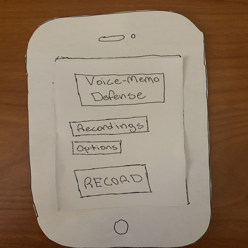

Problem Statement: Documentation of Abuse and Crime
Our users feel helpless because there are not really any good ways to document abuse and crime when they are in private or alone. Our solution should provide users with a way to easily document abuse or crime in private.
Affinity Diagram: Documentation of Abuse and Crime
Me and my group worked to make out affinity diagram to brainstorm everything that we can use for our problem statement.
Persona: 4 Personas for Documentation of Abuse and Crime
A persona of a typical documentation of abuse and crime app user.
Storyboard: Emily
A comic strip illustrating the need for a way to document abuse and crime.
Sketch: Documentation of Abuse and Crime
A sketch of potential app solutions for ways to document crime and abuse.
Paper Prototype: Documentation of Abuse and Crime
A prototype on paper which we can use to develop ideas off of.
Usability Testing: VoiceMemo Defense App

A scenario and tasks with changes to the app.